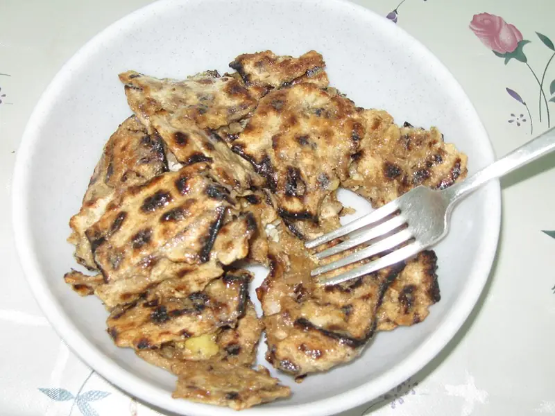

Фото: Yoninah, CC BY-SA 3.0

Мацебрай
Маца, обжаренная с яйцом, быстрый завтрак на Песах
15 мин2 порц.368 ккал на порциюБ 15 · Ж 18 · У 38Еврейская кухня
Продукты на 2 порц.
- Маца3 лист
- Яйцо куриное3 шт
- Вода1 стак.
- Растительное масло1 ст. л.
- Соль1 щеп.
- Перец чёрный молотый по желанию1 щеп.
Как готовить
- Наломайте мацу кусочками по 3-4 см.
- Залейте горячей водой на 1 минуту, чтобы маца размягчилась, затем откиньте и слегка отожмите.
- Взбейте яйца с солью и перцем, вмешайте мацу и оставьте на 2 минуты.
- Разогрейте масло на сковороде на среднем огне.
- Выложите массу и жарьте 3-4 минуты, перемешивая, как омлет, пока яйцо не схватится и не появится золотистая корочка.
Совет. Сладкий вариант: без перца, посыпьте сахаром с корицей или полейте мёдом. Для молочной трапезы масло можно заменить сливочным.